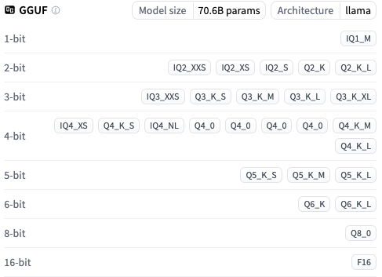
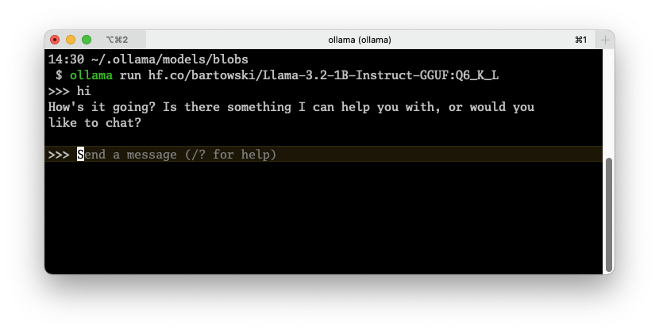

Setup#
Download ollama for easy serving of models. It supports most operating systems.
Follow the instructions and install
ollama. Do not download any models yet.ollamaenables a CLI for running models (soon!).
If the application starts automatically, close it (through the interface in Mac/Win, through
sudo systemctl stop ollama.servicein Linux), and then run:
OLLAMA_MAX_LOADED_MODELS=1 OLLAMA_NUM_PARALLEL=1 ollama serve
This opens a server on http://localhost:11434, that you can easily close, and we specify that we don’t want to load more models if requested. This is to conform to the limits of our hardware. In reality, you would assign a single LLM instance for each “agent” – a program that handles a specific task.
For local hosting, we usually prefer to run quantized GGUF models, named after the developer of the format, Georgi Gerganov.
Georgi is also the main developer of whisper.cpp and llama.cpp, C++ systems to run AST and LLMs respectively.
Nearly all LLM applications, including
ollama, are built on top of compiled binaries from llama.cpp.
GGUF#
GGUF is a format that allows quantization of models.
Typical PyTorch models (or similar) can be converted to a .GGUF format.
These are lower bit representations of the full-precision weights used when training the networks.
For example, from FP16 (half-precision) to a ~5 bit representation, commonly denoted by the “Q5” suffix.
Libraries like PyTorch train with FP32, but we’ve moved towards mixed-precision which combines FP32 and FP16:
FP16: weights/activations
FP32: gradients during backpropagation for numerical stability (lower precision -> less information)
This can reduce a 70B model (140GB) to 20-30GB while still being fairly usable.

Here’s a list of some quantized versions of the Llama-3.3 70B model:
Getting Started with a Model#
Let’s begin with llama-3.2 1B - a small 1B model just to test out our system.
Typically, there are devoted people out there who download the original models and quantize them with Llama.cpp, so we can download the premade GGUF file.
One of the most active ones is the user
bartowskion Hugging Face.If you don’t know of Hugging Face, it’s basically the GitHub of AI models and datasets.
You can click “Use this model” ->
ollamato create a runnable command:
Run the following command to use the model (this is the 6-bit version, it’s only 1.1GB!)
ollama run hf.co/bartowski/Llama-3.2-1B-Instruct-GGUF:Q6_K_L
If you have a little more capable hardware, we can use the 3B version:
ollama run hf.co/unsloth/Llama-3.2-3B-Instruct-GGUF:Q6_K
The output of the run command:
However, we’re not interested in talking to it through the terminal; we want to process outputs in our code, i.e., we need an API!
PS: If we want to use a far more capable model, the new Mistral Small (24B), released last week, is great! This one requires ~16GB VRAM, and a little more for context.
ollama run hf.co/bartowski/Mistral-Small-24B-Instruct-2501-GGUF:Q4_K_M